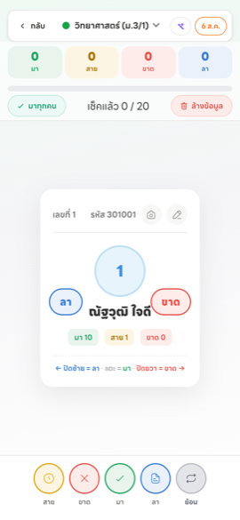
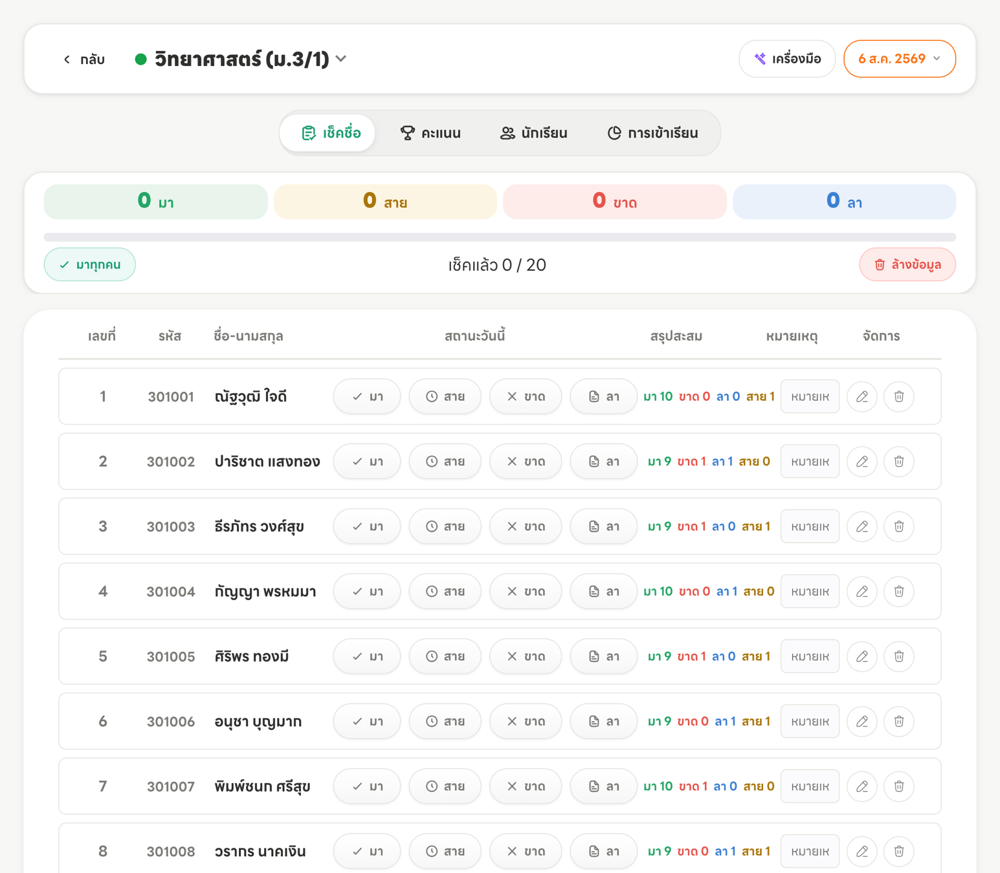
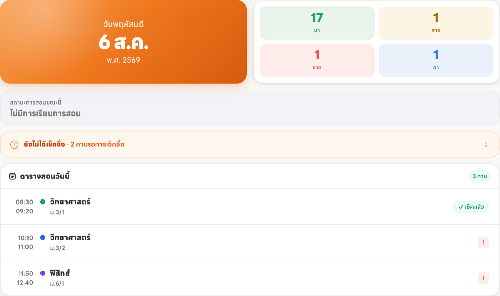
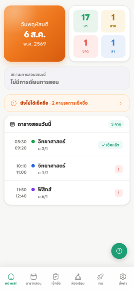

สร้างห้องเรียนวิชาแรก
หลังเข้าสู่ระบบครั้งแรก เมนู “ห้องเรียนวิชาสอน” จะยังว่างอยู่ กดปุ่ม “เพิ่มห้องเรียน” มุมขวาบนเพื่อเริ่ม

กรอก ชื่อวิชา กับ ห้องเรียน แล้วเลือกสีประจำห้อง สีนี้จะใช้แยกห้องในตารางสอนและหน้าแรก เลือกให้ต่างกันจะดูง่ายกว่า

สร้างครบทุกห้องที่สอนแล้วจะได้หน้าตาแบบนี้ — แต่ละการ์ดบอกจำนวนนักเรียนและอัตราการเข้าเรียน พร้อมปุ่มลัดไปหน้าคะแนน นักเรียน และการเข้าเรียน

เพิ่มรายชื่อนักเรียน
กดปุ่ม “นักเรียน” บนการ์ดห้องเรียน แล้วเพิ่มรายชื่อได้ 3 วิธี
- พิมพ์เอง — เหมาะเมื่อมีไม่กี่คน หรือเพิ่มนักเรียนย้ายเข้าทีหลัง
- นำเข้าจาก Excel — เร็วที่สุดถ้ามีไฟล์รายชื่ออยู่แล้ว ดาวน์โหลดไฟล์ต้นแบบจากในระบบ กรอกแล้วอัปโหลดกลับ
- สแกนจากรูปภาพ — ถ่ายรูปเอกสารรายชื่อ ระบบจะอ่านตัวอักษรให้ แล้วตรวจแก้ก่อนบันทึก

เช็กชื่อครั้งแรก
กดปุ่ม “การเข้าเรียน” บนการ์ดห้อง ระบบจะเปิดหน้าเช็กชื่อของวันนี้ให้อัตโนมัติ
บนมือถือ — นักเรียนจะขึ้นทีละคนเป็นการ์ด เลือกได้ 2 วิธี
- ปัดการ์ด — ปัดซ้าย = ลา · แตะกลาง = มา · ปัดขวา = ขาด
- กดปุ่มด้านล่าง — สาย · ขาด · มา · ลา และปุ่ม ย้อน ไว้แก้เมื่อกดพลาด

บนคอมพิวเตอร์ — จะเห็นรายชื่อทั้งห้องพร้อมกัน แต่ละแถวมีปุ่มสถานะให้กดได้เลย เหมาะกับการเช็กย้อนหลังหลายวันรวดเดียว

ระบบ บันทึกให้อัตโนมัติทันทีที่กด ไม่ต้องกดเซฟ ปิดหน้าไปแล้วกลับมาแก้ทีหลังได้
ลงตารางสอน เพื่อให้ระบบเตือนคาบให้
ขั้นนี้ ข้ามได้ ถ้ายังไม่พร้อม — เช็กชื่อได้ตามปกติอยู่แล้ว แต่ถ้าลงตารางสอนไว้ หน้าแรกจะทำงานให้คุณเยอะขึ้นมาก
เข้าเมนู “ตารางสอนประจำสัปดาห์” แล้วแตะช่องในตารางเพื่อเลือกวิชาและห้องที่สอนคาบนั้น
ใช้หน้าแรกเป็นศูนย์รวมประจำวัน
เมื่อลงตารางสอนแล้ว หน้าแรกจะสรุปให้ทุกวันว่า
- วันนี้มีคาบอะไรบ้าง เวลาไหน — แตะการ์ดคาบเพื่อไปเช็กชื่อได้ทันที
- คาบไหน เช็กแล้ว คาบไหน ยังไม่ได้เช็ก
- ถ้าลืมเช็ก จะมีแถบเตือนสีส้มขึ้นให้เห็นชัด

